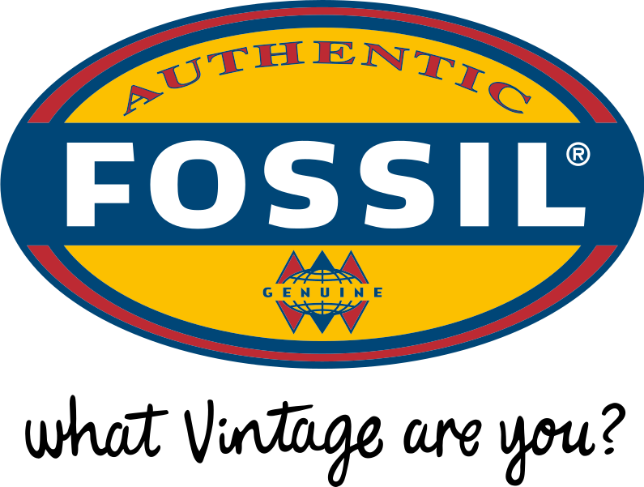

Experience
Co-Founder & Growth Manager
07/17 - 03/18
Together with Dominic Thimm and Moritz Köllinger we launched a platform driven marketing agency, helping startups and SMBs to grow their business by providing marketing technology & customer experience management. We have built best-of-breed solutions that enabled our clients to run automated marketing campaigns.
- Increasing SEO traffic & CX by taking product ownership for websites (Content model, info architecture, wireframing, user flows)
- Increasing the CR by analyzing & mapping the customer journey (Data Mining, Data Visualization, Reports etc.)
- Improving Customer Experience by User segmentation, website personalization, touchpoint analysis, user flows)
- Making Content creation more scalable by implementing API based CMS (Contentful)
- Increasing retention rates by setting up CRM Systems (Mautic)
- Improving tracking accuracy by implementing user IDs, events and integrating more data sources (e.g. CRM, Paid Channels)
Over the course of the 2 years, I owned projects/channels in the fields of Affiliate Marketing, Partnerships, Conversion Optimization & Paid Customer Acquisition. Our main missions were to establish a brand in the internet security space and reduce customer acquisition costs significantly, while scaling the business as fast as possible.
At a later stage I got involved in retention measures & growth hacking activities. I was lucky to join the marketing team from the very beginning allowing me to learn about the entire flow from setting up channels/teams to scaling the business.
- Set up and scaled worldwide affiliate program, gaining 2000+ partners
- Closed partnerships, generating global press coverage and new revenue streams (e.g. barter, integrations, bundles, reseller)
- A/B tested website, user flows, price points and business models to increase CR, AOV & CLTV
- Managed PPC, CPO, PPI campaigns, optimized ROI significantly
- Build reporting system for affiliate and partnerships traffic & defined data points to be gathered in data base improving the tracking accuracy
- Got in charge of testing new revenue streams (e.g. monetizing ad inventory)
Red Pineapple Media
Berlin, Germany
02/15 - 07/15
Red Pineapple Media is an advertising network, offering a platform for display and video ads between media agencies and publishers. My role was to improve the deliverability of the publisher inventory and contribute to the development of a new products.
- Managed display and Video ad campaigns
- Developed marketing activities to extend the publisher network
- Market research and project management for a new product (Web App - Blog search engine)
Rocket Internet | Wimdu
Berlin, Germany
Internship Marketing & Operations
11 /13 - 09 /14
In 2013 Wimdu was one of the largest Rocket Ventures. I’ve spent 9 months working in two departments: Operations and Marketing. Within the marketing team my role was to help rolling out big questionnaires/split tests and processing the gathered data.
The second part I joined the operations department taking ownership of a project that helped improving the entire customer support workflow. I moved to Lisbon for 5 months in order  implement new features and processes while being onsite with the customer support team.
Marketing
- Conversion Rate Optimization
- Preparing A/B test & surveys and creating the logic in survey monkey.
- Preparing data in Excel, Spreadsheets and SPSS
Operations
- Leading project to improve response rate of customer support team
- Gathering, processing and analyzing historical data
- Using new data points (e.g. customer stage, website behavior) to filter customer requests more detailed
- Building new automations in ZenDesk to enhance customer request flow
- Set up reports and dashboards in Gooddata to report the improvement of our main KPIs (e.g. response rate, avg. time per ticket, re-assigning rate etc.)

Fossil Europe Group
Berlin, Germany
06/13 - 09/13
During my studies I did an internship in the operations department at Fossil. I worked in the team that was in charge of managing the shop maintenance of all European Fossil stores. My responsibility was to help the team in organizing the facility works with contractors and to set up a knowledge wiki in order to reduce error rate and improve efficiency of the team.